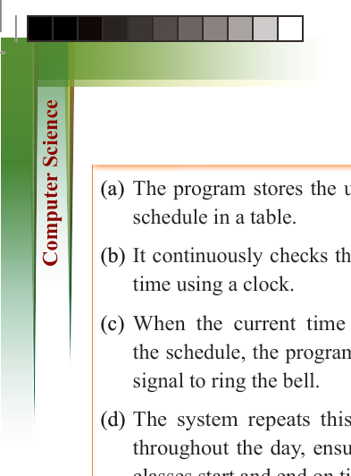
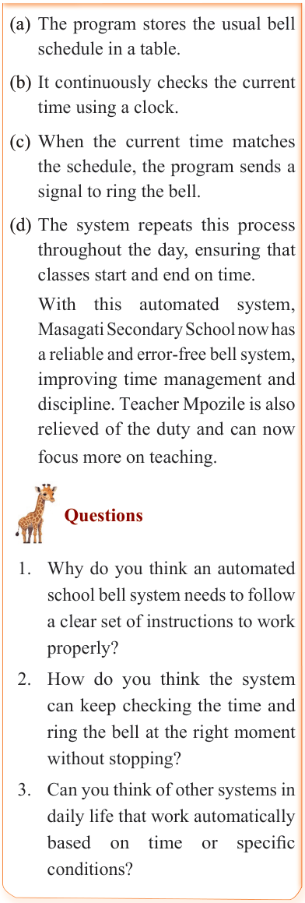
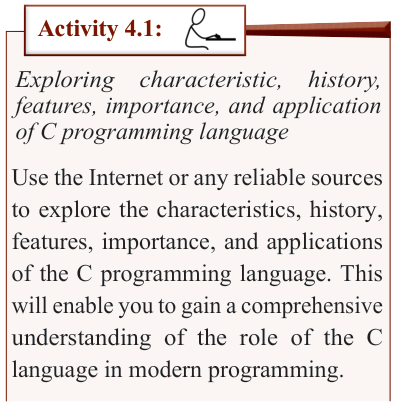

152
for Secondary Schools

(a) The program stores the usual bell schedule in a table.
(b) It continuously checks the current time using a clock.
(c) When the current time matches the schedule, the program sends a signal to ring the bell.
(d) The system repeats this process
throughout the day, ensuring that
classes start and end on time.
With this automated system,
Masagati Secondary School now has a reliable and error-free bell system,
improving time management and

discipline. Teacher Mpozile is also

relieved of the duty and can now

focus more on teaching.


Questions


1. Why do you think an automated


school bell system needs to follow

a clear set of instructions to work

properly?

2. How do you think the system


can keep checking the time and

ring the bell at the right moment

without stopping?

3. Can you think of other systems in


daily life that work automatically

based on time or specific

conditions?

Meaning of programming with C

Programming with C refers to the process

of writing computer programs using the

C programming language. Developed

by Dennis Ritchie at Bell Laboratories

in 1972, C is a robust and widely used
programming language. Despite being
over 50 years old, it remains popular due to its significance in computer science. C is known for its power and efficiency in
developing operating systems, databases,
games, and embedded systems. It enables
programmers to write code that interacts
directly with hardware, making it ideal
for system-level programming. With features such as functions, loops, and
conditions, C allows developers to build
well-structured and efficient programs.
The C programming has been essential in
the development of operating systems like
UNIX, which was originally written in C.

Activity 4.1:
Exploring characteristic, history,
features, importance, and application of C programming language
Use the Internet or any reliable sources
to explore the characteristics, history,
features, importance, and applications
of the C programming language. This
will enable you to gain a comprehensive
understanding of the role of the C
language in modern programming.


ComputerScin